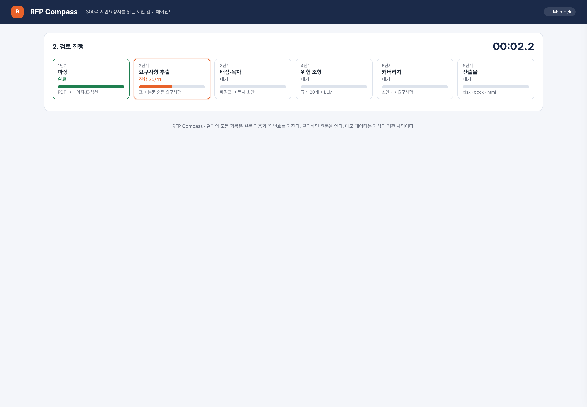
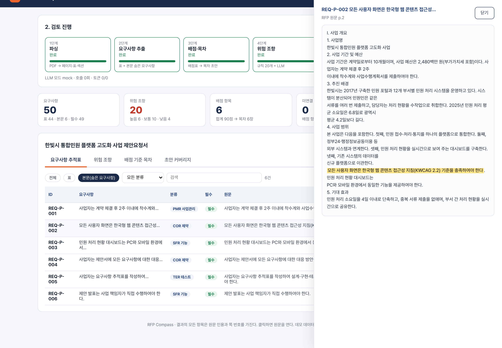
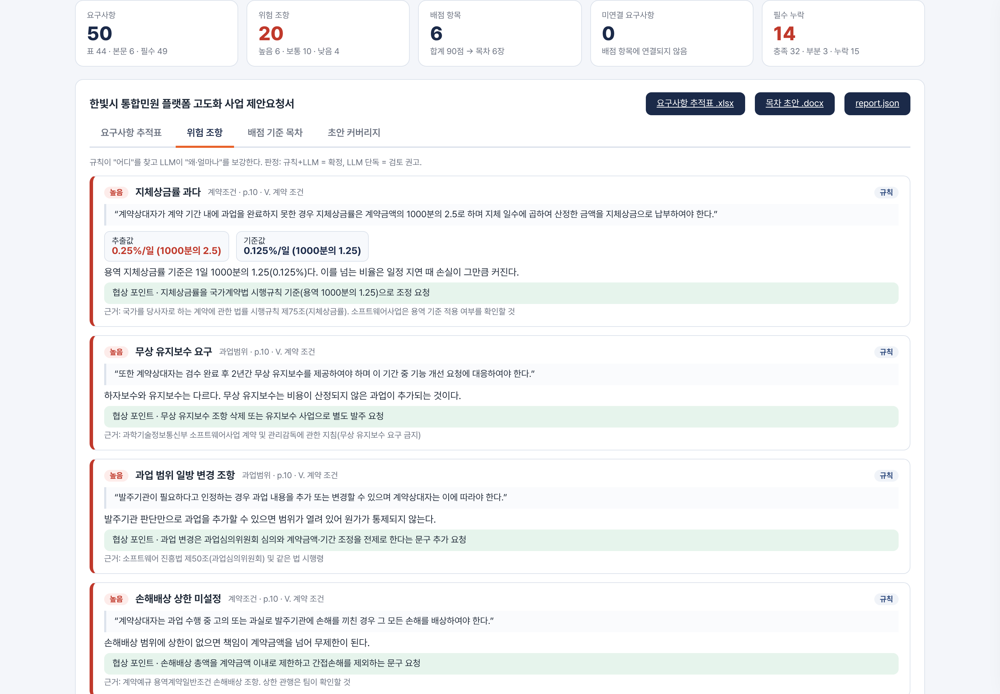
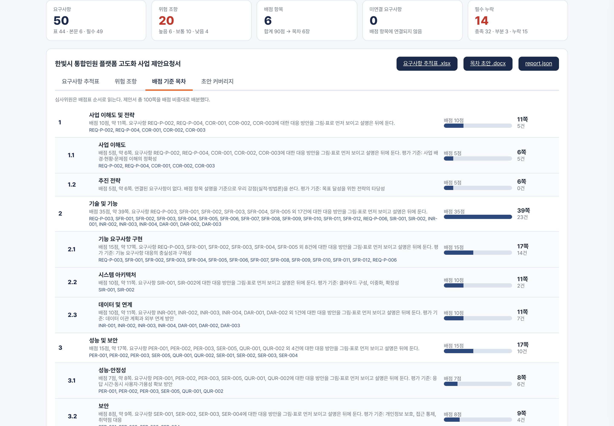
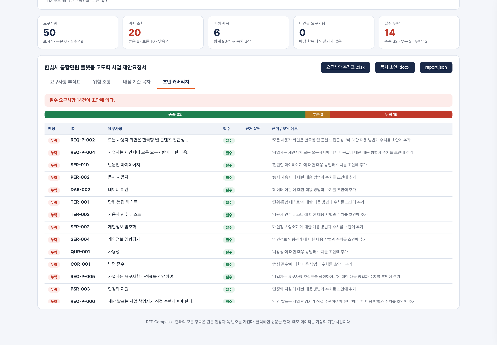

RFP PDF 한 개를 넣으면 요구사항 추적표, 배점 기준 목차 초안, 위험 조항 경고, 제안서 초안 커버리지가 나온다. 모든 결과에는 원문 인용과 페이지 번호가 붙는다. 사람은 읽고 옮기는 대신 확인하고 결정한다.
| AI 활용 수준 | LLM은 읽기·판단 세 단계만 맡고, 흐름·검증·출력은 결정적 코드가 쥔다. 결과는 구조화 출력(pydantic 스키마)으로 받고 원문 인용을 코드가 재검증한다. |
|---|---|
| 문제 해결 방식 | 위험 조항은 규칙 20개와 LLM의 이중 판정, 정확도는 골든셋 평가 루프로 올린다. 에이전트 7개가 단계별 품질을 나눠 맡는다. |
| 실제 업무 적용 가능성 | 산출물이 제안 팀이 지금 쓰는 엑셀·워드 형식이다. 사내 FabriX, Claude Enterprise 위에서 그대로 돌릴 수 있다. |
AI로 해결하고자 하는 문제 상황 또는 새롭게 시도해 보고 싶은 업무/서비스는 무엇인가요? 현재의 업무를 더 효율적으로 바꾸는 것부터, 지금까지 없던 새로운 업무 경험이나 서비스를 만드는 것까지 자유롭게 적어주세요.
공공·금융 제안을 할 때마다 제안 팀은 200~300쪽짜리 제안요청서(RFP)를 받는다. 제출까지는 보통 2~4주다. 그 첫 며칠은 여러 사람이 RFP를 나눠 읽고 요구사항을 엑셀로 옮기는 데 쓴다. 요구사항은 "SFR-001" 같은 고유번호가 붙은 표에도 있지만, 사업 개요나 추진 방향 문단 속에 "~하여야 한다" 형태로 숨어 있는 것도 많다. 표는 옮겨 적어도 문단 속 요구사항은 자주 빠진다.
RFP 뒤쪽 계약 조건 장에는 수주 뒤 손실로 이어지는 조항이 있다. 지체상금률이 기준보다 높거나, 하자보수 기간이 3년이거나, "발주기관이 필요하다고 인정하는 경우 과업을 추가할 수 있다"는 문장이 그것이다. 제안 단계에서 보지 못하면 협상 테이블에 올리지 못한다. 제안 PM은 요구사항 표를 채우느라 바쁘고, 계약 조건을 읽는 사람은 따로 없는 경우가 많다.
RFP PDF 한 개를 넣으면 ① 요구사항 추적표(표와 본문의 요구사항을 공공 SW 분류 11종으로 나누고 필수 여부·원문·페이지를 붙임), ② 위험 조항 경고(추출값과 기준값, 협상 포인트), ③ 배점 기준 목차 초안(배점 비중에 비례한 분량과 답해야 할 요구사항 번호), ④ 제안서 초안 커버리지(필수 요구사항 누락을 먼저 표시)가 나오게 한다. 사람은 읽고 옮기는 대신 확인하고 결정한다. 이것이 바꾸고 싶은 업무 경험이다.
제안한 아이디어를 실현하기 위해 AI를 어떻게 활용할 계획인가요? AI 활용방안과 이를 통해 문제를 해결하거나 새로운 변화를 만드는 방법을 구체적으로 작성해주세요.
LLM에게 "이 RFP를 분석해 줘"라고 통째로 맡기면 결과가 매번 다르고 무엇을 놓쳤는지 알 수 없다. 그래서 파이프라인을 여섯 단계로 나누고, 단계 사이의 데이터 형식을 pydantic 스키마로 고정했다. LLM(Claude Opus 5.5 기본)은 그중 세 단계에서만 쓰고, 나머지는 코드가 한다. 각 단계는 체크포인트 파일을 남겨 실패한 단계부터 다시 돌릴 수 있다.
| 단계 | 하는 일 | LLM 사용 |
|---|---|---|
| parse | pdfplumber로 페이지 텍스트와 표를 뽑고 제목 패턴(Ⅰ. / 1. / 가.)으로 섹션을 나눈다. 머리말·쪽번호는 반복 줄 탐지로 제거한다. | 없음 |
| extract | 섹션 단위로 Claude에 보내 요구사항을 받는다. 인용문이 실제 페이지에 있는지 코드가 재검증하고, 중복은 코드가 병합한다. | 구조화 출력 |
| toc | 배점 열 합이 60~100인 표를 코드가 먼저 배점표로 고른다. 요구사항→배점 항목 연결만 Claude가 한다. 분량은 배점 비례로 계산한다. | 연결 단계만 |
| risk | 규칙 20개(정규식+임계값)가 조항 위치와 값을 찾는다. Claude가 앞뒤 600자를 읽고 심각도·근거·협상 포인트를 쓴다. | 보강 단계만 |
| coverage | 초안을 문단 id로 쪼개 넘기고, 근거는 문단 id로만 받는다. 필수 요구사항 누락을 따로 센다. | 구조화 출력 |
| export | 엑셀(추적표·위험·배점-목차·커버리지), 워드(목차 초안), HTML 대시보드. | 없음 |
Claude Opus 5.5의 구조화 출력으로 요구사항·위험·커버리지를 pydantic 스키마 그대로 받는다. 분류는 11종 중 하나, 필수 여부는 must/should/may만 허용한다. 모델이 자유 문장으로 답할 여지를 없앴다.
요구사항과 위험 조항은 모두 원문 인용과 페이지를 가진다. 인용문이 그 페이지에 실제로 있는지 코드가 확인하고 없으면 신뢰도를 낮춰 표시한다. "그 조항 어디 있어요?"에 페이지를 바로 연다.
위험 조항은 규칙이 "어디"를, LLM이 "왜·얼마나"를 맡는다. 법령 기준값은 코드가 아니라 규칙 파일에 근거 조문과 함께 둔다. 팀이 데모 전에 최신 조문으로 확인한다.
샘플 RFP의 정답 요구사항과 심어 둔 위험 조항으로 재현율·정밀도·탐지율을 매번 잰다. 떨어지면 원인을 가른 뒤 한 가지만 고치고 다시 잰다.
| 에이전트 | 역할과 지키는 원칙 | 맡는 모듈 |
|---|---|---|
| rfp-orchestrator | 여섯 단계 실행과 체크포인트 확인. 요구사항 0건·배점표 미발견은 성공이 아니라 조사 대상으로 본다. | pipeline.py, cli.py |
| rfp-parser | 표 행 수와 페이지 번호가 원본과 같은지 책임. 병합 셀 상속은 고유번호 열에는 적용하지 않는다. | parse.py |
| requirement-extractor | 표와 본문의 요구사항 추출. 인용 없는 결과는 버리고, 중복 병합은 코드가 한다. | extract.py |
| toc-architect | 배점표 인식과 분량 비례 목차. 연결 못 한 요구사항은 "기타 대응" 장에 모아 사라지지 않게 한다. | toc.py |
| risk-auditor | 규칙 파일 유지. 새 규칙에는 걸리는 예문과 안 걸리는 예문을 함께 넣는다. | risk.py, risk_rules.yaml |
| coverage-checker | 초안 대조. 근거는 문단 id로만 받고, 필수 누락을 맨 위에 센다. | coverage.py |
| eval-judge | 골든셋 측정과 이전 기록 비교. 개선 제안은 한 번에 하나. | eval/ |
스킬 /rfp-review(전체 실행과 요약), /risk-rules(규칙 추가 절차와 예문 테스트), /demo-rehearsal(3분 데모 점검표). 사내에서는 FabriX 또는 Claude Enterprise 위에서 같은 구조로 돌릴 수 있다.
해커톤 2일 동안 구현해보고 싶은 주요 기능은 무엇인가요? 아이디어가 구현되면 사용자가 무엇을 하고, AI가 어떤 결과를 보여줄지 적어주세요.
| 기능 | 사용자가 하는 일 | AI가 보여 주는 것 |
|---|---|---|
| ① 요구사항 추적표 | RFP PDF를 올린다 | 요구사항 목록(ID, 11종 분류, 필수 여부, 원문 인용, 페이지). 본문에서 찾은 요구사항은 "본문" 배지로 구분한다. 클릭하면 원문 페이지가 열린다. |
| ② 위험 조항 경고 | 위험 카드를 연다 | 조항 원문, 추출값과 기준값(예: 지체상금률 0.25%/일 vs 기준 0.125%/일), 왜 위험한지, 협상 포인트, 근거 조문. |
| ③ 배점 기준 목차 초안 | 제안서 총 분량을 입력한다 | 배점 항목별 장과 배정 분량, 각 장에서 답할 요구사항 번호, 두 문장짜리 작성 지침. 워드로 내려받는다. |
| ④ 초안 커버리지 | 작성 중인 초안(md/docx)을 올린다 | 요구사항마다 충족·부분·누락과 근거 문단. 필수 요구사항 누락 건수를 맨 위에 빨간색으로 보여 준다. |

요구사항·위험 조항 어디서든 "PDF n쪽 열기"가 있다. AI 결과를 믿으라고 하지 않고 10초 안에 확인하게 한다.
요구사항 47건·위험 6건·필수 누락 4건처럼 숫자를 먼저 보여 준다. 발표에서 말하는 숫자와 화면의 숫자가 같다(예시 수치).
대시보드는 report.json 하나로 렌더되는 정적 HTML이다. 외부 CDN 없이 심사장 노트북에서 바로 연다.




| 시각 | 화면 | 말하는 것 |
|---|---|---|
| 0:00 | 업로드·진행 | 300쪽 RFP, 평균 25시간·9명이 읽던 일(Loopio 2025) |
| 0:30 | 요구사항 추적표 | 본문에 숨은 요구사항을 찾았다. 하나를 눌러 원문 페이지를 연다 |
| 1:15 | 위험 조항 | 높음 등급 하나를 읽고 추출값과 기준값을 나란히 보여 준다 |
| 2:00 | 목차 초안 | 심사위원은 배점표 순서로 읽는다. 배점·분량·요구사항 번호 |
| 2:30 | 커버리지 | 필수 요구사항 누락 건수를 빨간색으로 |
| 2:50 | 다운로드 | 내일 아침 제안 PM 책상에 올라가는 엑셀·워드 |
이 아이디어의 주요 사용자는 누구이며, 어떤 기대효과가 있나요? 고객 가치 창출, 오류 감소, 정보 접근성 개선, 업무효율 향상 등 기대하는 변화를 구체적으로 적어주세요.
RFP를 받은 날 추적표와 목차 초안을 손에 쥔다. 읽고 옮기는 대신 확인하고 배분한다. 마감 전날 초안을 넣어 빠진 요구사항을 찾는다.
위험 조항 목록을 원문·기준값·협상 포인트와 함께 받는다. 계약 조건을 제안 단계에서 협상 테이블에 올린다.
입찰 참가 자격 요건과 위험 조항 등급을 보고 참여 여부를 하루 안에 결정한다. 참여하지 않을 사업에 제안 공수를 쓰지 않는다.
| 영역 | 지금 | 목표 |
|---|---|---|
| 업무 효율 | RFP 1차 검토에 며칠, 여러 명 | 1차 검토 3시간 이내. 사람은 확인과 결정에 시간을 쓴다 |
| 오류 감소 | 본문 속 요구사항 누락, 계약 조건 미검토 | 필수 요구사항 누락 0건. 위험 조항을 제안 단계에서 협상 테이블에 올림 |
| 정보 접근성 | 요구사항과 조항이 PDF 속에 묻힘 | 모든 항목에 페이지와 원문 인용. 누구나 10초 안에 원문 확인 |
| 고객 가치 | 배점표와 어긋난 목차 | 배점 비중에 맞춘 목차로 평가자가 읽기 쉬운 제안서 |
| 비교 항목 | 문서 요약 · 범용 Copilot | RFP Compass |
|---|---|---|
| 답하는 질문 | "이 문서가 무슨 내용인가" | "무엇을 써야 하고, 무엇이 위험하고, 무엇이 빠졌나" |
| 목차 | 문서 구조를 따라 요약 | 평가 배점표 순서와 비중으로 제안서 목차를 짠다 |
| 요구사항 | 표를 옮기거나 문단을 요약 | 표와 본문 요구사항을 11종 분류와 필수 여부로 구조화하고 원문 인용을 코드로 재검증 |
| 위험 조항 | "지체상금 조항이 있다" | 추출값 vs 법령 기준값, 왜 위험한지, 협상 포인트. 규칙+LLM 이중 판정 |
| 초안 대조 | 없음 | 요구사항마다 충족·부분·누락과 근거 문단. 필수 누락을 먼저 센다 |
| 결과 형식 | 채팅 답변 | 제안 팀이 쓰는 엑셀 4시트·워드 목차·오프라인 대시보드 |
| 위험 | 대응 |
|---|---|
| 참신함이 낮아 보인다 | 배점 기준 목차와 초안 대조를 데모의 중심에 둔다. 두 기능은 문서 요약 도구에 없다. |
| LLM이 틀린다 | 모든 결과에 원문 인용과 페이지가 있어 사람이 10초 안에 확인한다. 인용문이 페이지에 없으면 코드가 표시한다. 규칙에 없는 LLM 단독 판단은 "검토 권고"로 구분한다. |
| 법령 기준값이 틀릴 수 있다 | 기준값은 규칙 파일에 근거 조문과 함께 두고, 팀이 데모 전에 최신 조문으로 확인한다. 화면에도 "확인 필요"를 표시한다. |
| 실제 RFP 사용 | 데모는 가상의 기관·사업으로 만든 RFP를 쓴다. 실제 문서는 조달청 나라장터 공개 자료만 쓰고 출처를 첫 장에 적는다. |
| 라이브 데모 실패 | 체크포인트에서 출력 단계만 다시 돌리는 명령과 같은 시나리오의 녹화본을 준비한다. 대시보드는 외부 CDN 없이 오프라인에서 연다. |
| 300쪽 처리 시간·비용 | 섹션 단위 호출과 체크포인트 재사용. 추출은 섹션별로 병렬 호출하고, 재실행 때는 바뀐 단계만 돌린다. |
aihck/ ├── CLAUDE.md # 하네스 가이드: 원칙, 6단계, 작업 규칙 ├── .claude/ │ ├── agents/ # 서브에이전트 7개 (orchestrator, parser, extractor, │ │ # toc-architect, risk-auditor, coverage-checker, eval-judge) │ └── skills/ # /rfp-review, /risk-rules, /demo-rehearsal ├── src/rfpharness/ │ ├── schemas.py # 단계 사이의 계약 (pydantic) │ ├── parse.py → extract.py → toc.py → risk.py → coverage.py → export.py │ ├── llm.py # Claude 호출 단일 창구 (구조화 출력, mock 모드) │ ├── pipeline.py / cli.py # 체크포인트, --from <stage> 재개 │ └── prompts/ # extract.md, toc.md, risk.md, coverage.md ├── rules/risk_rules.yaml # 위험 규칙 20개: 패턴, 기준값, 근거 조문, 예문 ├── samples/ # 가상 RFP 생성기(make_sample_rfp.py), 제안서 초안 ├── eval/ # 골든셋(정답 요구사항, 심은 위험), run_eval.py └── tests/ # 규칙 예문 자동 검사, 파서, 파이프라인(mock)
uv venv .venv && . .venv/bin/activate && uv pip install -e ".[dev]"
python samples/make_sample_rfp.py # 가상 RFP PDF 생성
RFPHARNESS_LLM=mock python -m rfpharness review \
samples/sample_rfp.pdf --draft samples/draft_proposal.md
pytest -q && python eval/run_eval.py out/sample_rfp/report.json
실제 Claude 호출은 RFPHARNESS_LLM=anthropic(기본값)으로 바꾸고 ANTHROPIC_API_KEY 또는 ant auth login 자격을 쓴다. mock 모드는 네트워크 없이 결정적 결과를 내며 테스트와 흐름 확인용이다.
스키마, 규칙 파일, 골든셋, 체크포인트는 모델과 무관하다. 모델이 바뀌면 프롬프트 네 개와 측정 결과만 바뀐다. 같은 하네스를 다른 코딩 에이전트에서 다시 구현해 검증할 수 있다.
골든셋 작성, 규칙 기준값 확인, 위험 조항의 최종 협상 판단, 커버리지 누락의 보완은 사람이 한다. 나머지는 코드와 모델이 한다. 어디서 사람이 보는지가 설계에 적혀 있다.
출처: Loopio, 2025 RFP Response Trends & Benchmarks(1,544명 조사, 단일 출처) · 과학기술정보통신부, 2026년 공공부문 SW·ICT장비·정보보호 수요예보 · 소프트웨어사업 요구사항 분석·적용 가이드(요구사항 분류 11종) · 삼성전기 사내 해커톤 심사 기준 보도자료(2026-10-14)